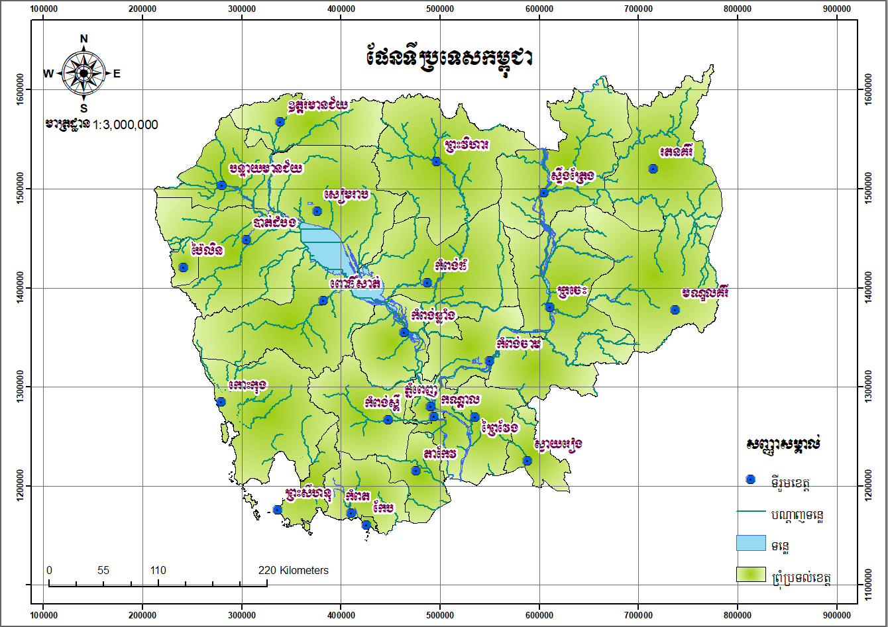

Recent Work

Ants in Harmony
A macro shot capturing the teamwork of ants on a blade of grass, taken in the early morning light.
Golden Horizon
A serene sunset over the Pacific, with the sun casting a golden reflection on the water.
Misty Waves
A long-exposure photograph of waves crashing against rugged cliffs, creating a dreamy effect.

Autumn Pathway
A vibrant autumn scene with a tree-lined path, showcasing the beauty of seasonal change.